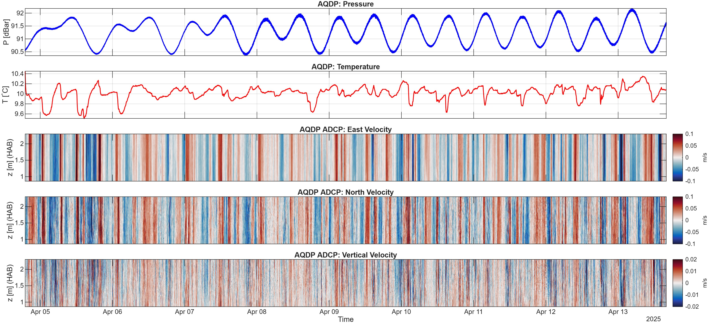
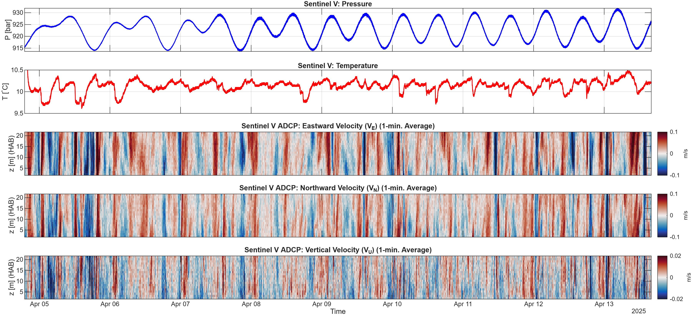
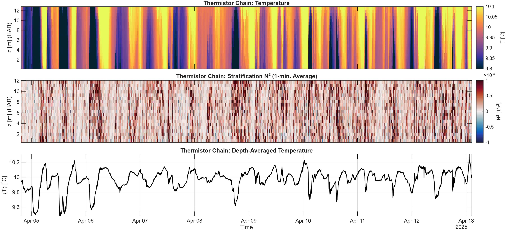
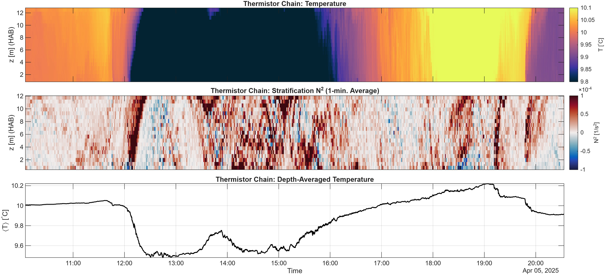
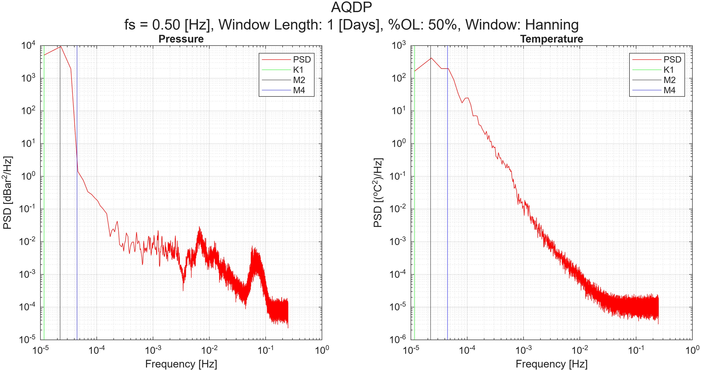
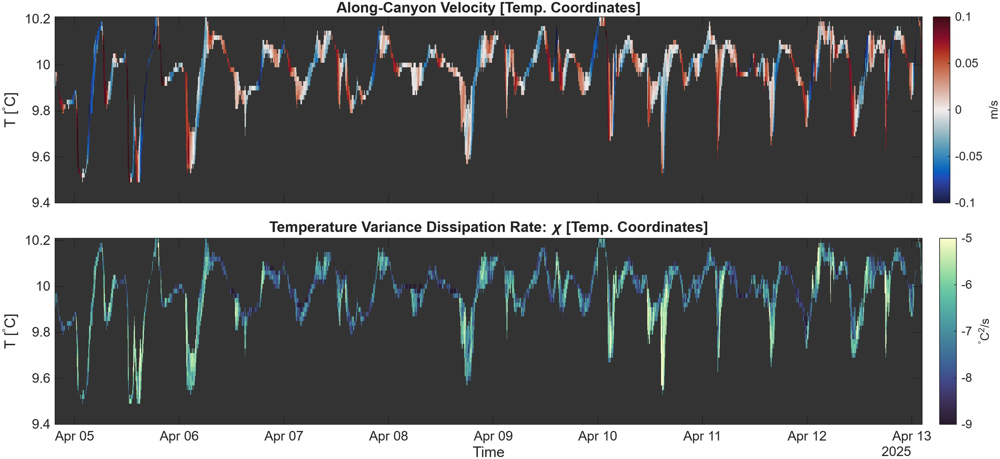
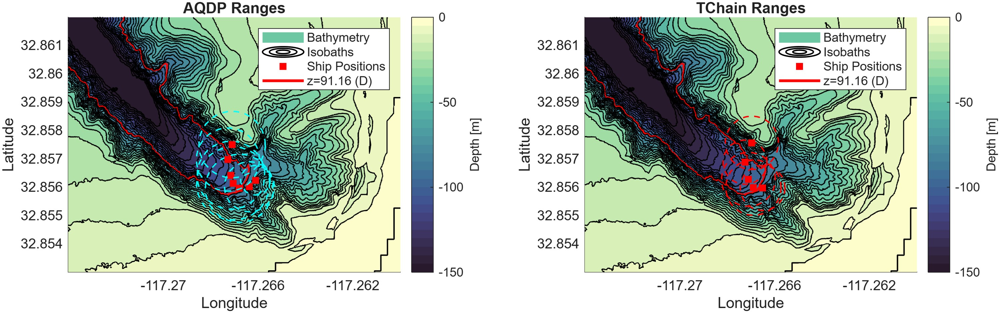
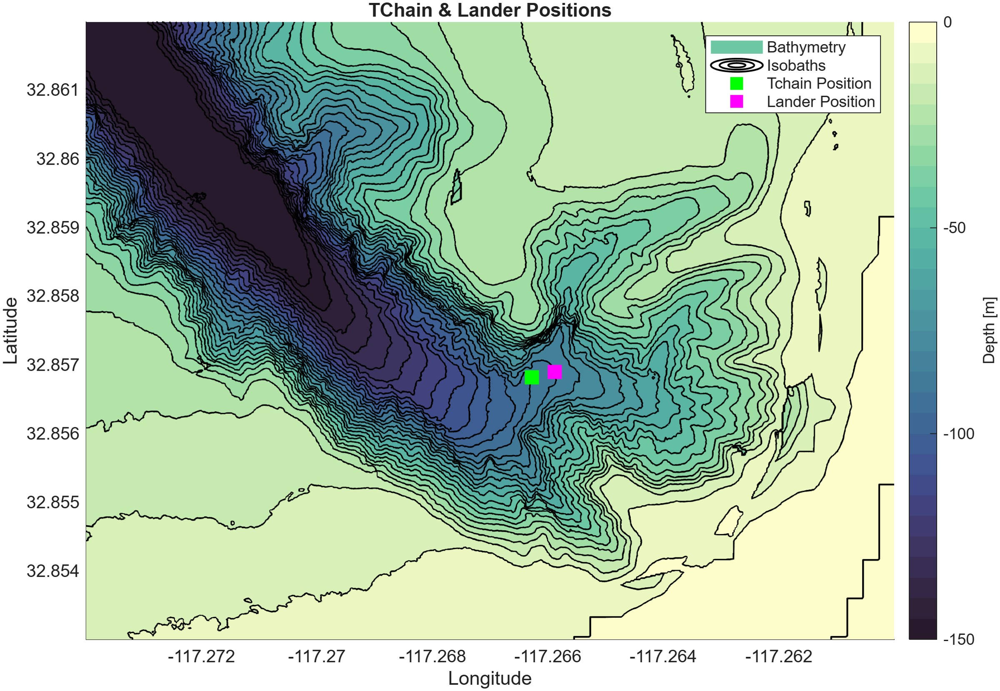

Oceanographic Data Visualization
The goal for this section is to be more or less a catalog of how I visualize data. It combines both my undergraduate and graduate research experience, some of the information is the same as the two respective pages, but a lot of it is new. Each figure will come with a short description to provide context, but not in-depth explanations. See the links below to jump straight to specific figures.
Table of Contents
- ADCP Summary: Pressure, Velocity, Temperature
- Temperature Sensor Chain Summary: Temperature & Stratification
- Velocity Spectra
- Pressure & Temperature Spectra
- Turbulent Temperature Overturns
- Velocity & Temperature Relationships during Bore Events
- Turbulent Dissipation Events
- Turbulent Dissipation Method Comparison
- Deployed Instrument Localization
Environmental Fluid Dynamics
ADCP Summary: Pressure, Velocity, Temperature
{kind=link}

Pressure, temperature, and directional velocity components from an Acoustic Doppler Current Profiler (ADCP). The ADCP, a Nortek Aquadopp, wqas deployed for 8 days at the bottom of a submarine canyon in La Jolla, CA. It was moored to lander and meaured velocity in the bottom 2 meters of the water column in 90 meters of depth.
{kind=link}

Pressure, temperature, and directional velocity components from a different ADCP, an RDI SentinelV. This ADCP was deployed at the same mission as the Aquadopp but measured nearly the whole water column.
Temperature Sensor Chain Summary: Temperature & Stratification
{kind=link}

Temperature, stratification, and depth-averaged temperature signals from a deployment in La Jolla CA. Twenty Seabird 56 temperature sensors, or thermistors, were attached on a line to measure vertical changes in temperature over time. The string measured the bottom 12 meters of a submarine canyon in 90 meters depth for 8 days. Using a co-deployed CTD for salinity data, and an equation of state, the stratification is also found. The bottommost plot is the depth-averaged temperature signal.
{kind=link}

Temperature, stratification, and depth-averaged temperature signals over a cold bore event.
Velocity Spectra

Velocity spectra from the ADCP deployments, A one-day time window is used with 50% overlap to realize tidal frequencies. Tidal frequencies are apparent, as well as the surface wave band (3-30 second period waves)
Pressure & Temperature Spectra
{kind=link}

Spectra of pressure and temperature from an ADCP. In the pressure spectrum, diurnal, semidiurnal, internal wave, infragravity wave, and surface gravity wave energy is all visible.
Turbulent Temperature Overturns


Examples of temperature overturns. These occur when turbulent eddies roll through a region and invert the temperature profile. They can appear to be breaking waves in some conditions, despite occuring at the bottom of the ocean. Color scales are adjusted to show contrast in differing mean temperature conditions.
Velocity & Temperature Relationships during Bore Events
{kind=link}

It can be helpful to remap velocity from vertical coordinate to a temperature coordinate. This plot shows a submarine canyon oriented perpendicular to a coastline. As water flows up-canyon (towards shore, red color), it brings cold water with it, lowering the temperature at the sensor location. On the flip side, when water flows down-canyon, it brings warm water from the shore with it, raising the temperature. The bottom subplot shows the dissipation of temperature variance, which is a measure of how rapidly temperature changes are being smoothed out. These typically happen closer to rapid temperature changes and changes in velocity.
Turbulent Dissipation Events

This figure shows how a turbulent event affects other oceanographic varaibles. The top subplot shows how strong the ocean is being mixed, due to the onset of a cold bore event. The second subplot shwos the stratification, which is a barrier to turbulence. The third shows the temperature, which clearly shows a drop when the bore rolls through. The fourth shows the along-canyon velocity, showing the bore being pushed towards shore from deeper waters. The final subplot shows the acoustic backscatter amplitude, showing lots of mass being carried by the cold bore.
Turbulent Dissipation Method Comparison

The results of turbulent dissipation for a cold bore event. Four different methods, using a combiantion of velocity and temperature data measure the strength of turbulence. During the cold bore, the four methods agree, in other areas they don't. This is likely due to the sensors being in slightly seperate locations, difference in vertical and temporal resolution, and differences in data quality control.
Deployed Instrument Localization
{kind=link}

After instruments are deployed into the ocean, their exact location is unknown. To approximately locate them, the ship will ping the instrument and receieve a response. The time difference between sending the ping and receving the response gives a sphere of potential locations. Obviously many of these positions are not possible (like being out of the water), so it can eb reduced to roughly a circle of positions on the seafloor. Using multiple pings, alongside a known ship position, will give the approximate location.
{kind=link}

Chosen approximate locations of the two moored sensor arrays.